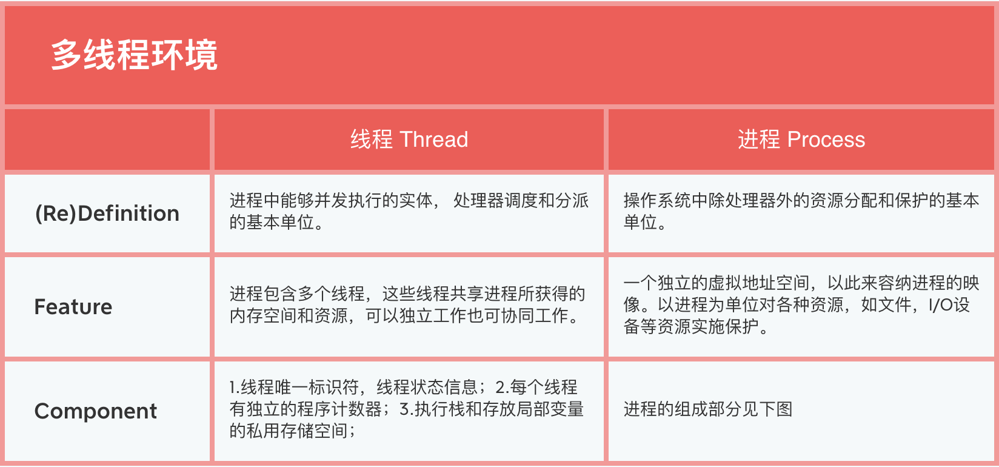
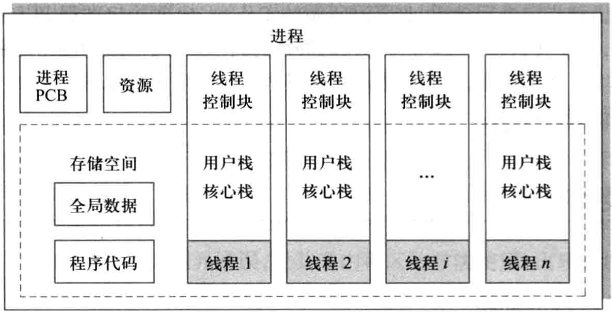
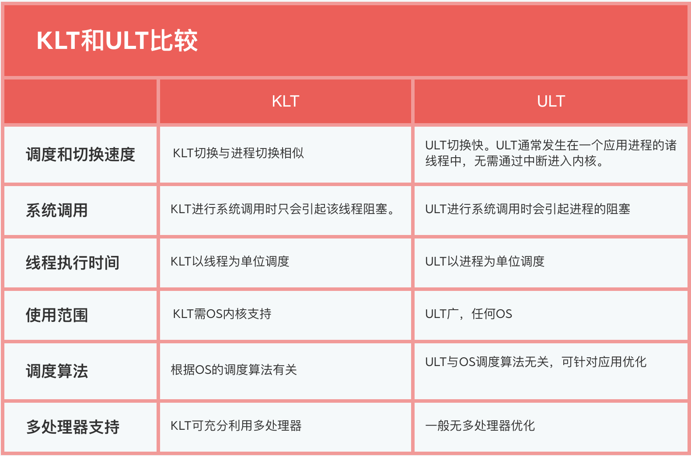

<!DOCTYPE html>
<html>
<head><meta name="generator" content="Hexo 3.8.0">
  <!-- hexo-inject:begin --><!-- hexo-inject:end --><meta charset="utf-8">
  

  
  <title>OS--处理器管理（4）_线程及其实现 | DongXuehui&#39;s Blog</title>
  <meta name="viewport" content="width=device-width, initial-scale=1, maximum-scale=1">
  <meta name="description" content="OS—处理器管理（4）_线程及其实现知识点：  引入多线程的动机 多线程环境中的进程和线程 线程的实现  引入多线程的动机在引入进程的概念后，又引入线程的概念，目的是为了减少程序并发执行时所付出的时空开销，使得并发颗粒更细，并发性更好。 引入线程的基本思路是：把进程的两项功能独立分配资源和被调度分派执行分离开来。 独立分配资源：任由进程完成，作为系统资源分配和保护的独立单位，无须频繁切换。 被调度">
<meta name="keywords" content="操作系统">
<meta property="og:type" content="article">
<meta property="og:title" content="OS--处理器管理（4）_线程及其实现">
<meta property="og:url" content="http://dongxh.cn/2020/04/03/OS-处理器管理（4）-线程及其实现/index.html">
<meta property="og:site_name" content="DongXuehui&#39;s Blog">
<meta property="og:description" content="OS—处理器管理（4）_线程及其实现知识点：  引入多线程的动机 多线程环境中的进程和线程 线程的实现  引入多线程的动机在引入进程的概念后，又引入线程的概念，目的是为了减少程序并发执行时所付出的时空开销，使得并发颗粒更细，并发性更好。 引入线程的基本思路是：把进程的两项功能独立分配资源和被调度分派执行分离开来。 独立分配资源：任由进程完成，作为系统资源分配和保护的独立单位，无须频繁切换。 被调度">
<meta property="og:locale" content="zh-CN">
<meta property="og:image" content="http://dongxh.cn/2020/04/03/OS-处理器管理（4）-线程及其实现/1.png">
<meta property="og:image" content="http://dongxh.cn/2020/04/03/OS-处理器管理（4）-线程及其实现/2.png">
<meta property="og:image" content="http://dongxh.cn/2020/04/03/OS-处理器管理（4）-线程及其实现/3.png">
<meta property="og:updated_time" content="2020-04-04T04:53:52.091Z">
<meta name="twitter:card" content="summary">
<meta name="twitter:title" content="OS--处理器管理（4）_线程及其实现">
<meta name="twitter:description" content="OS—处理器管理（4）_线程及其实现知识点：  引入多线程的动机 多线程环境中的进程和线程 线程的实现  引入多线程的动机在引入进程的概念后，又引入线程的概念，目的是为了减少程序并发执行时所付出的时空开销，使得并发颗粒更细，并发性更好。 引入线程的基本思路是：把进程的两项功能独立分配资源和被调度分派执行分离开来。 独立分配资源：任由进程完成，作为系统资源分配和保护的独立单位，无须频繁切换。 被调度">
<meta name="twitter:image" content="http://dongxh.cn/2020/04/03/OS-处理器管理（4）-线程及其实现/1.png">
  
    <link rel="alternate" href="/atom.xml" title="DongXuehui&#39;s Blog" type="application/atom+xml">
  
  
    <link rel="icon" href="/favicon.png">
  
  
    <link href="//fonts.googleapis.com/css?family=Source+Code+Pro" rel="stylesheet" type="text/css">
  
  <link rel="stylesheet" href="/css/style.css"><!-- hexo-inject:begin --><!-- hexo-inject:end -->
</head>
</html>
<body>
  <!-- hexo-inject:begin --><!-- hexo-inject:end --><div id="container">
    <div id="wrap">
      <header id="header">
  <div id="banner"></div>
  <div id="header-outer" class="outer">
    <div id="header-title" class="inner">
      <h1 id="logo-wrap">
        <a href="/" id="logo">DongXuehui&#39;s Blog</a>
      </h1>
      
    </div>
    <div id="header-inner" class="inner">
      <nav id="main-nav">
        <a id="main-nav-toggle" class="nav-icon"></a>
        
          <a class="main-nav-link" href="/">Home</a>
        
          <a class="main-nav-link" href="/archives">Archives</a>
        
      </nav>
      <nav id="sub-nav">
        
          <a id="nav-rss-link" class="nav-icon" href="/atom.xml" title="RSS Feed"></a>
        
        <a id="nav-search-btn" class="nav-icon" title="搜索"></a>
      </nav>
      <div id="search-form-wrap">
        <form action="//google.com/search" method="get" accept-charset="UTF-8" class="search-form"><input type="search" name="q" class="search-form-input" placeholder="Search"><button type="submit" class="search-form-submit">&#xF002;</button><input type="hidden" name="sitesearch" value="http://dongxh.cn"></form>
      </div>
    </div>
  </div>
</header>
      <div class="outer">
        <section id="main"><article id="post-OS-处理器管理（4）-线程及其实现" class="article article-type-post" itemscope itemprop="blogPost">
  <div class="article-meta">
    <a href="/2020/04/03/OS-处理器管理（4）-线程及其实现/" class="article-date">
  <time datetime="2020-04-03T13:10:44.000Z" itemprop="datePublished">2020-04-03</time>
</a>
    
  <div class="article-category">
    <a class="article-category-link" href="/categories/Operating-System/">Operating System</a>
  </div>

  </div>
  <div class="article-inner">
    
    
      <header class="article-header">
        
  
    <h1 class="article-title" itemprop="name">
      OS--处理器管理（4）_线程及其实现
    </h1>
  

      </header>
    
    <div class="article-entry" itemprop="articleBody">
      
        <h1 id="OS—处理器管理（4）-线程及其实现"><a href="#OS—处理器管理（4）-线程及其实现" class="headerlink" title="OS—处理器管理（4）_线程及其实现"></a>OS—处理器管理（4）_线程及其实现</h1><p>知识点：</p>
<ul>
<li>引入多线程的动机</li>
<li>多线程环境中的进程和线程</li>
<li>线程的实现</li>
</ul>
<h2 id="引入多线程的动机"><a href="#引入多线程的动机" class="headerlink" title="引入多线程的动机"></a>引入多线程的动机</h2><p>在引入进程的概念后，又引入线程的概念，目的是为了减少程序并发执行时所付出的时空开销，使得并发颗粒更细，并发性更好。</p>
<p>引入线程的基本思路是：把进程的两项功能<strong>独立分配资源</strong>和<strong>被调度分派执行</strong>分离开来。</p>
<p><strong>独立分配资源</strong>：任由进程完成，作为系统资源分配和保护的独立单位，无须频繁切换。</p>
<p><strong>被调度分派执行</strong>：交给称为线程的实体来完成，线程作为系统调度和分派的基本单位，会被频繁地调度和切换。</p>
<p><strong>多线程结构进程的优点：</strong></p>
<ol>
<li>快速线程切换。同一进程中的多线程切换只需要改变堆栈和寄存器，地址空间不变。</li>
<li>通信易于实现。自动共享进程的内存和文件，线程可自由访问全局数据，实现数据共享十分方便，线程通信相对简单不必经过内核。</li>
<li>减少管理开销。线程创建和撤销工作比进程少很多，并且无须再分配存储空间和各种资源。</li>
<li>并发程度提高。</li>
</ol>
<h2 id="多线程环境中的进程和线程"><a href="#多线程环境中的进程和线程" class="headerlink" title="多线程环境中的进程和线程"></a>多线程环境中的进程和线程</h2><h4 id="多线程"><a href="#多线程" class="headerlink" title="多线程"></a>多线程</h4><p>系统调度的基本单位是线程而不是进程,每当创建一个进程时，至少要同时为该进程创建一个线程</p>
<p>多线程环境下线程和进程：</p>
<p></p>
<p>多进程结构进程结构示意图：</p>
<p>进程分为<strong>资源集合</strong>和<strong>线程集合</strong>。进程要支撑线程运行，为线程提供虚拟地址空间和各种资源。</p>
<p>进程封装管理信息，包括对指令代码、全局数据、打开的文件和信号量等共享部分的管理。</p>
<p>线程封装执行信息，包括状态信息、寄存器、执行栈（用户栈指针与核心栈指针）和局部变量、过程调用参数，返回值等私有部分的管理。</p>
<p></p>
<p>也把线程称为轻量进程（Light Weight Process, LWP）。</p>
<h4 id="线程状态"><a href="#线程状态" class="headerlink" title="线程状态"></a>线程状态</h4><p>线程状态有运行，就绪，等待和终止，线程的状态转换与进程类似。</p>
<p>由于线程不是资源拥有单位，挂起状态对于线程是没有意义的。挂起操作所引起的状态是进程级状态。</p>
<p>如果进程挂起后被对换出主存，则它的所有线程因共享进程的地址空间，也必须全部对换出去。</p>
<h4 id="线程组织"><a href="#线程组织" class="headerlink" title="线程组织"></a>线程组织</h4><p>一个进程可以包含若干线程，线程有多种组织方式：</p>
<ol>
<li>调度员-工作者模式：进程中的一个线程担任调度员、接收和处理工作请求，其他线程是工作者线程，由调度员线程分配任务并处理工作请求。</li>
<li>组模式：进程中的各个线程都可以取得并处理工作请求，有时某个线程被设计成专门执行特点任务，并建立相应任务队列。</li>
<li>流水线模式：线程排成某个次序，第一线程所生产的数据传给下一个线程进行处理，依次类推，数据按照排定次序由线程依次传递以完成被请求的任务</li>
</ol>
<h2 id="线程的实现"><a href="#线程的实现" class="headerlink" title="线程的实现"></a>线程的实现</h2><p>多线程的实现分为三类：</p>
<ol>
<li>用户级线程（User Level Thread , ULT）</li>
<li>内核级线程（Kernel Level Thread , KLT）</li>
<li>混合式线程，同时支持ULT和KLT</li>
</ol>
<h4 id="用户级线程ULT"><a href="#用户级线程ULT" class="headerlink" title="用户级线程ULT"></a>用户级线程ULT</h4><p>由用户应用程序建立、调度和管理的线程。(如Java ，Informix)</p>
<ol>
<li>不依赖于OS内核，应用进程利用<strong>线程库</strong>提供创建、同步、调度和管理线程的函数来控制用户线程。</li>
<li>调度由应用软件内部进行，通常采用非抢先式和更简单的规则，也无需用户态/核心态切换，所以速度特别快。一个线程发起系统调用而阻塞，则整个进程在等待。时间片分配给进程，多线程则每个线程就慢。</li>
</ol>
<p><strong>线程库</strong>：基于多线程的应用程序的开发和运行环境。</p>
<p>内核不知道线程的活动，但仍然管理线程所属进程的活动；当线程调用系统调用时，整个进程阻塞；但对线程库来说，线程仍然是运行状态，即线程状态是与进程状态独立的。</p>
<p>优点：</p>
<ul>
<li>线程切换不调用内核</li>
<li>调度是应用程序特定的：可以选择最好的算法。</li>
<li>ULT可运行在任何操作系统上（只需要线程库）。</li>
</ul>
<p>缺点：</p>
<ul>
<li>大多数系统调用是阻塞的，因此核心阻塞进程，故进程中所有线程将被阻塞。</li>
<li>核心只将处理器分配给进程，同一进程中的两个线程不能同时运行于两个处理器上，因此不能利用多处理器优点</li>
</ul>
<h4 id="内核级线程KLT"><a href="#内核级线程KLT" class="headerlink" title="内核级线程KLT"></a>内核级线程KLT</h4><p>由操作系统的内核建立、调度和管理的线程。(如Windows NT，OS/2)</p>
<ul>
<li>所有线程管理由内核完成</li>
<li>没有线程库，但对内核线程工具提供API</li>
<li>内核维护进程和线程的上下文</li>
<li>线程之间的切换需要内核支持</li>
<li>以线程为基础进行调度</li>
</ul>
<p>优点：</p>
<ul>
<li>对多处理器，内核可以同时调度同一进程的多个线程</li>
<li>阻塞是在线程一级完成</li>
<li>内核例程是多线程的</li>
</ul>
<p>缺点：</p>
<ul>
<li>线程在用户态运行，而线程的调度和管理在内核实现，则在同一个进程中，控制权要想从一个线程转送到另一个线程时需要用户态-内核态-用户态模式转换，系统开销大</li>
</ul>
<h4 id="KLT和ULT比较"><a href="#KLT和ULT比较" class="headerlink" title="KLT和ULT比较"></a>KLT和ULT比较</h4><p></p>
<h4 id="混合式线程"><a href="#混合式线程" class="headerlink" title="混合式线程"></a>混合式线程</h4><p>线程实现分为两个层次：用户级和核心级。线程创建在用户空间完成；大量线程调度和同步在用户空间完成；程序员可以调整KLT的数量；可以取两者中最好的。</p>

      
    </div>
    <footer class="article-footer">
      <a data-url="http://dongxh.cn/2020/04/03/OS-处理器管理（4）-线程及其实现/" data-id="ck8l56qhj000htmlktjf1639u" class="article-share-link">Share</a>
      
      
  <ul class="article-tag-list"><li class="article-tag-list-item"><a class="article-tag-list-link" href="/tags/操作系统/">操作系统</a></li></ul>

    </footer>
  </div>
  
    
<nav id="article-nav">
  
  
    <a href="/2020/04/02/OS-处理器管理（3）-进程及其实现/" id="article-nav-older" class="article-nav-link-wrap">
      <strong class="article-nav-caption">Older</strong>
      <div class="article-nav-title">OS--处理器管理（3）_进程及其实现</div>
    </a>
  
</nav>

  
</article>

</section>
        
          <aside id="sidebar">
  
    
  <div class="widget-wrap">
    <h3 class="widget-title">分类</h3>
    <div class="widget">
      <ul class="category-list"><li class="category-list-item"><a class="category-list-link" href="/categories/Digital-Image-Process/">Digital Image Process</a></li><li class="category-list-item"><a class="category-list-link" href="/categories/Operating-System/">Operating System</a></li></ul>
    </div>
  </div>


  
    
  <div class="widget-wrap">
    <h3 class="widget-title">标签</h3>
    <div class="widget">
      <ul class="tag-list"><li class="tag-list-item"><a class="tag-list-link" href="/tags/linux/">linux</a></li><li class="tag-list-item"><a class="tag-list-link" href="/tags/slam/">slam</a></li><li class="tag-list-item"><a class="tag-list-link" href="/tags/操作系统/">操作系统</a></li><li class="tag-list-item"><a class="tag-list-link" href="/tags/数字图像处理/">数字图像处理</a></li></ul>
    </div>
  </div>


  
    
  <div class="widget-wrap">
    <h3 class="widget-title">标签云</h3>
    <div class="widget tagcloud">
      <a href="/tags/linux/" style="font-size: 13.33px;">linux</a> <a href="/tags/slam/" style="font-size: 10px;">slam</a> <a href="/tags/操作系统/" style="font-size: 16.67px;">操作系统</a> <a href="/tags/数字图像处理/" style="font-size: 20px;">数字图像处理</a>
    </div>
  </div>

  
    
  <div class="widget-wrap">
    <h3 class="widget-title">归档</h3>
    <div class="widget">
      <ul class="archive-list"><li class="archive-list-item"><a class="archive-list-link" href="/archives/2020/04/">四月 2020</a></li><li class="archive-list-item"><a class="archive-list-link" href="/archives/2020/03/">三月 2020</a></li><li class="archive-list-item"><a class="archive-list-link" href="/archives/2019/08/">八月 2019</a></li><li class="archive-list-item"><a class="archive-list-link" href="/archives/2019/03/">三月 2019</a></li></ul>
    </div>
  </div>


  
    
  <div class="widget-wrap">
    <h3 class="widget-title">最新文章</h3>
    <div class="widget">
      <ul>
        
          <li>
            <a href="/2020/04/03/OS-处理器管理（4）-线程及其实现/">OS--处理器管理（4）_线程及其实现</a>
          </li>
        
          <li>
            <a href="/2020/04/02/OS-处理器管理（3）-进程及其实现/">OS--处理器管理（3）_进程及其实现</a>
          </li>
        
          <li>
            <a href="/2020/03/30/OS-处理器管理（1）-中断技术/">OS--处理器管理（2）_中断技术</a>
          </li>
        
          <li>
            <a href="/2020/03/28/OS-处理器管理（1）-处理器状态/">OS--处理器管理（1）_处理器状态</a>
          </li>
        
          <li>
            <a href="/2020/03/27/OS-操作系统概论/">OS--操作系统概论</a>
          </li>
        
      </ul>
    </div>
  </div>

  
</aside>
        
      </div>
      <footer id="footer">
  
  <div class="outer">
    <div id="footer-info" class="inner">
      &copy; 2020 dwyane_dongxh<br>
      Powered by <a href="http://hexo.io/" target="_blank">Hexo</a>
    </div>
  </div>
</footer>
    </div>
    <nav id="mobile-nav">
  
    <a href="/" class="mobile-nav-link">Home</a>
  
    <a href="/archives" class="mobile-nav-link">Archives</a>
  
</nav>
    

<script src="//ajax.googleapis.com/ajax/libs/jquery/2.0.3/jquery.min.js"></script>


  <link rel="stylesheet" href="/fancybox/jquery.fancybox.css">
  <script src="/fancybox/jquery.fancybox.pack.js"></script>


<script src="/js/script.js"></script>


  </div><!-- hexo-inject:begin --><!-- hexo-inject:end -->
</body>
</html>